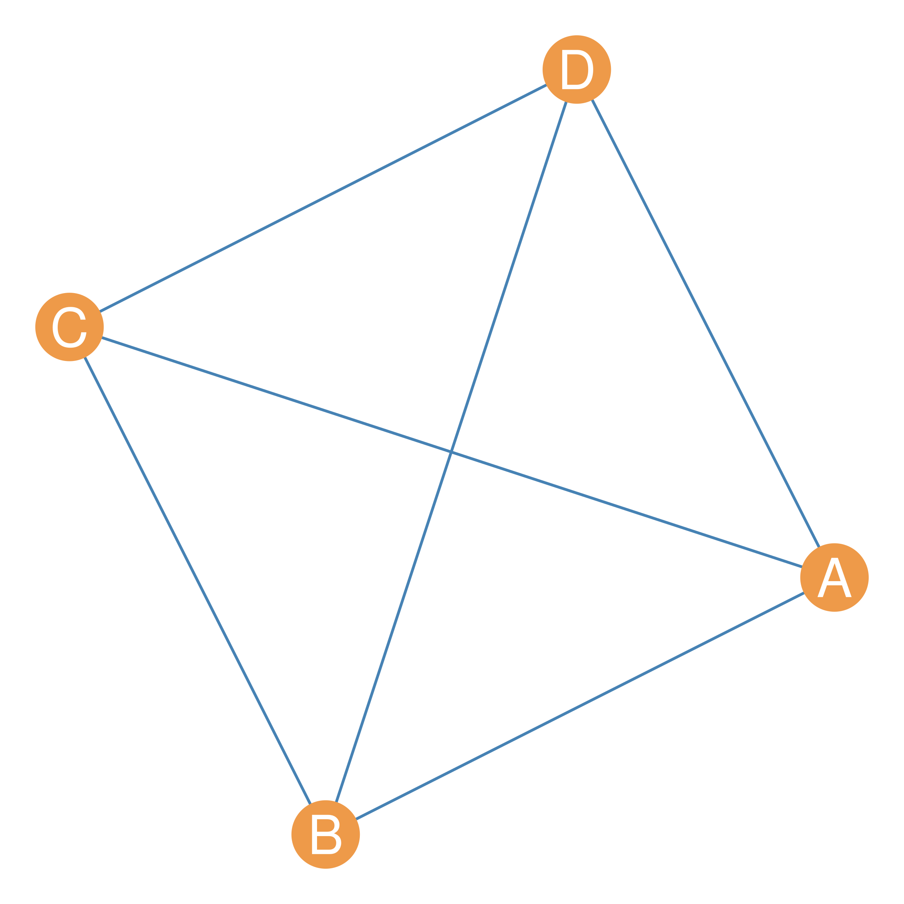
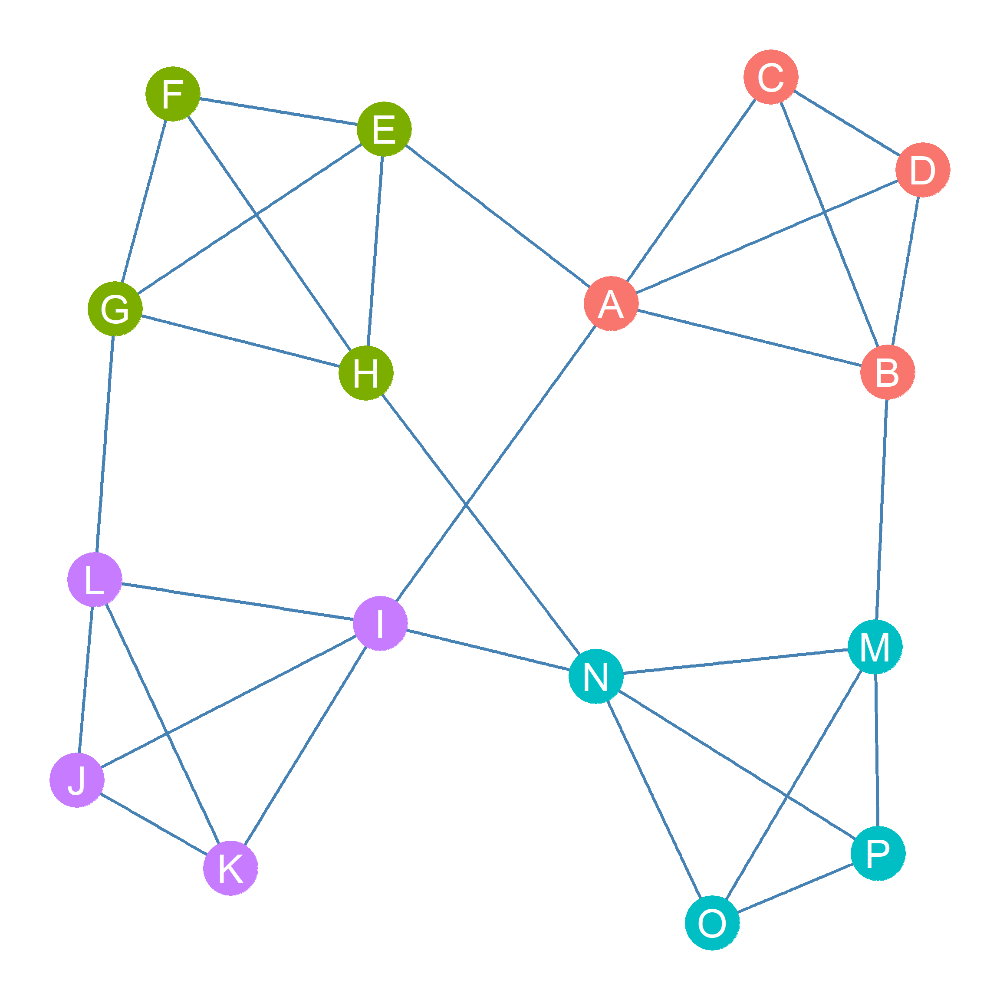
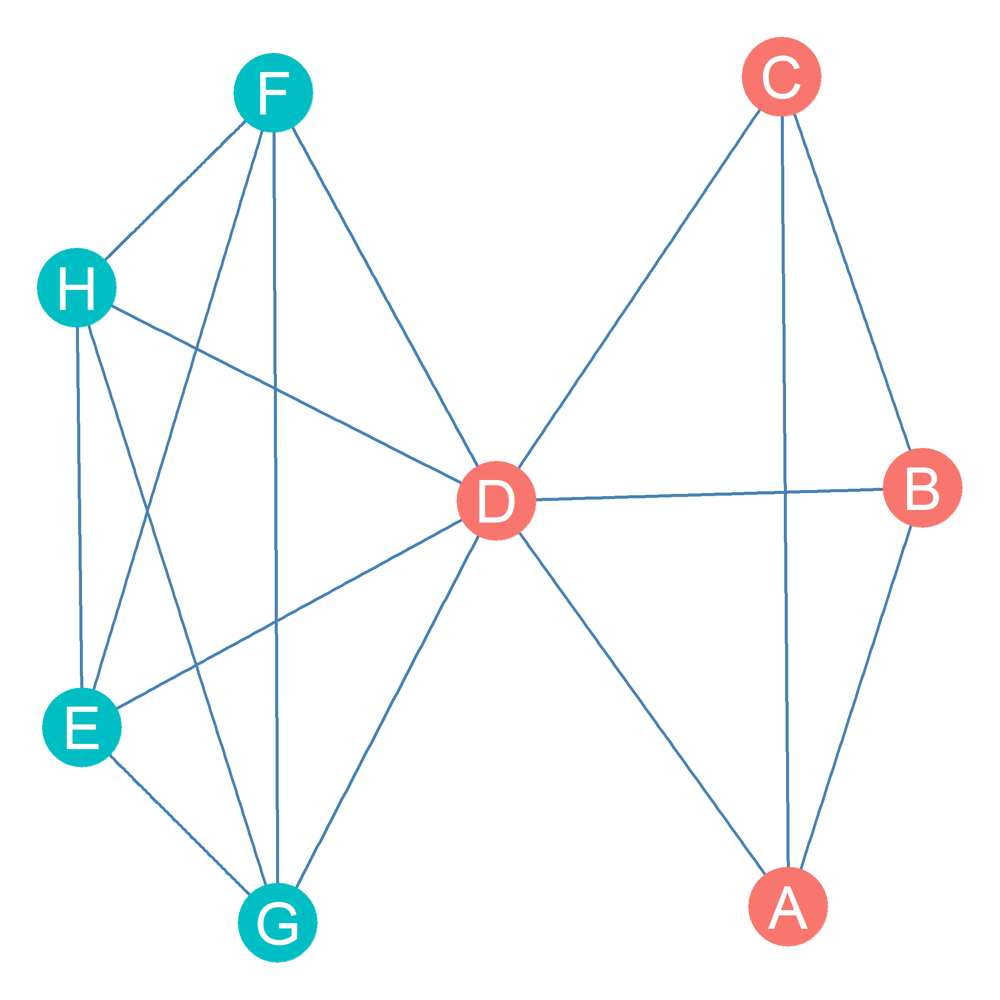
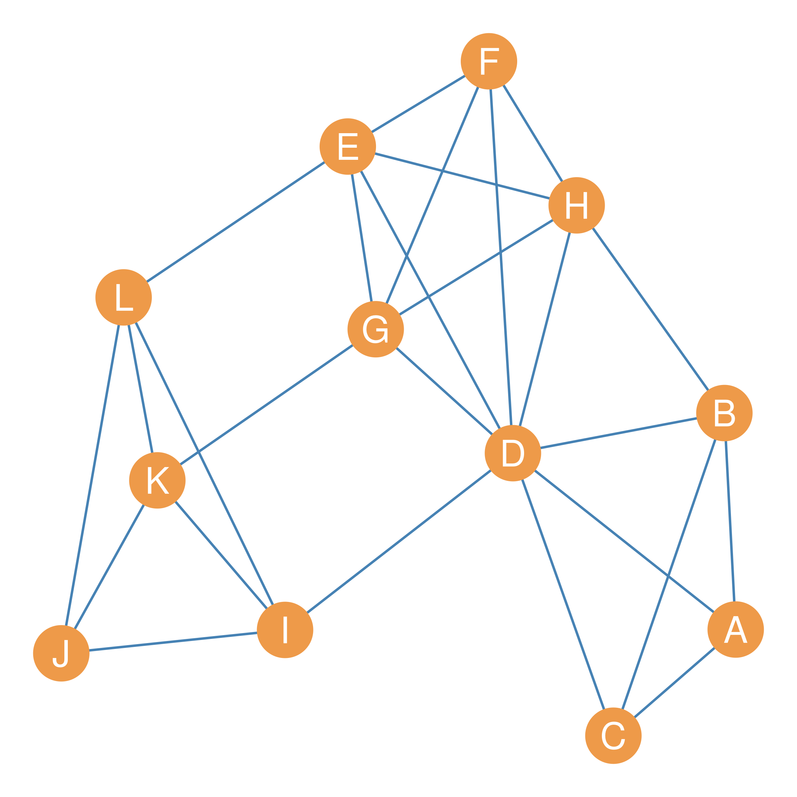
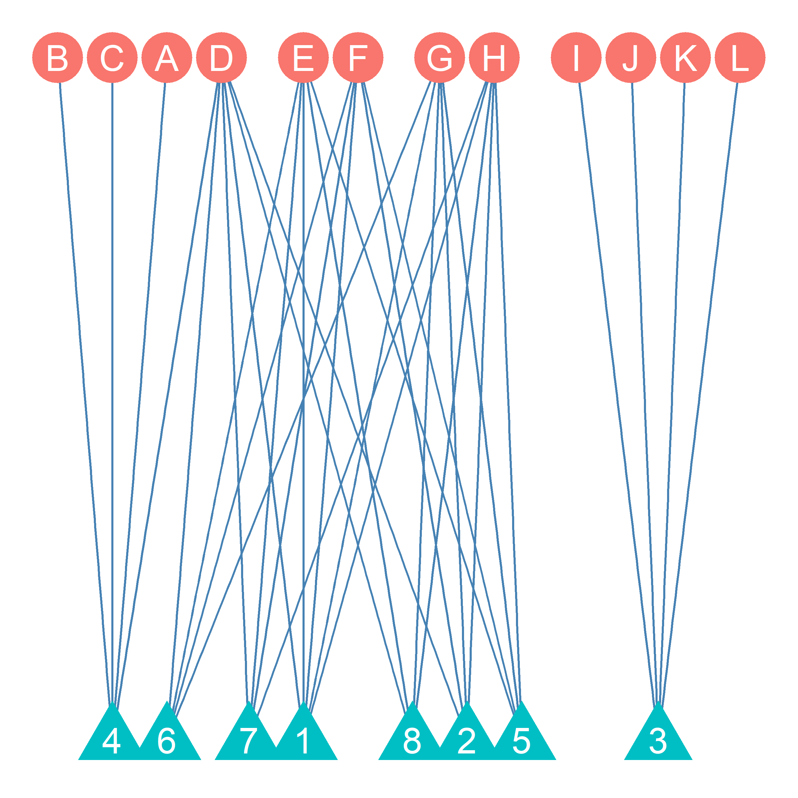
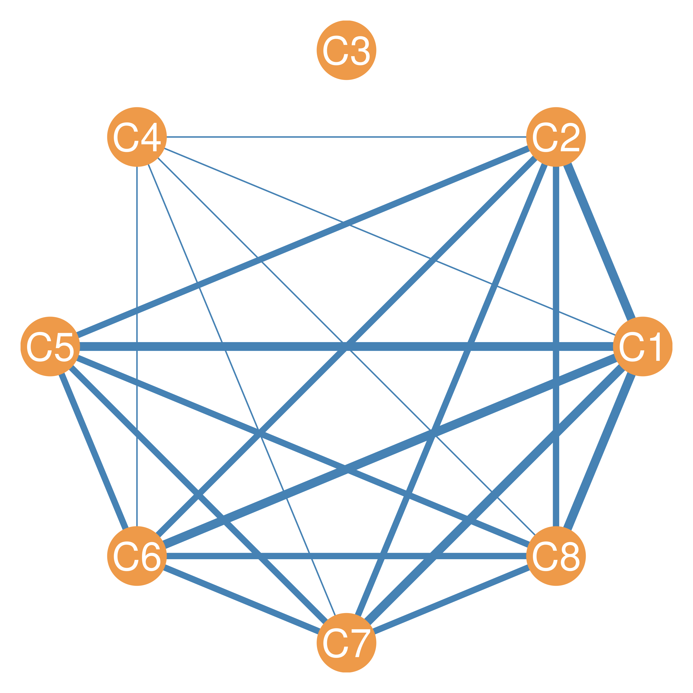
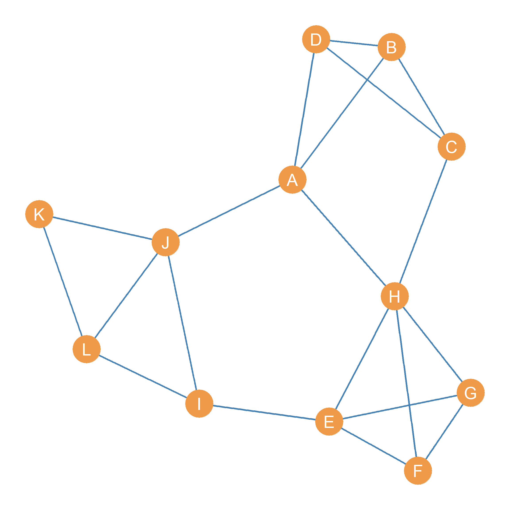

| C1 | C2 | C3 | C4 | C5 | C6 | C7 | C8 | |
|---|---|---|---|---|---|---|---|---|
| A | 0 | 0 | 0 | 1 | 0 | 0 | 0 | 0 |
| B | 0 | 0 | 0 | 1 | 0 | 0 | 0 | 0 |
| C | 0 | 0 | 0 | 1 | 0 | 0 | 0 | 0 |
| D | 1 | 1 | 0 | 1 | 0 | 1 | 1 | 1 |
| E | 1 | 0 | 0 | 0 | 1 | 1 | 1 | 1 |
| F | 1 | 1 | 0 | 0 | 1 | 1 | 1 | 0 |
| G | 1 | 1 | 0 | 0 | 1 | 1 | 0 | 1 |
| H | 1 | 1 | 0 | 0 | 1 | 0 | 1 | 1 |
| I | 0 | 0 | 1 | 0 | 0 | 0 | 0 | 0 |
| J | 0 | 0 | 1 | 0 | 0 | 0 | 0 | 0 |
| K | 0 | 0 | 1 | 0 | 0 | 0 | 0 | 0 |
| L | 0 | 0 | 1 | 0 | 0 | 0 | 0 | 0 |
30 Clique Analysis
30.1 Categories Everywhere
A common feature of social life is the division of people into categories. For instance, there are ethnoracial categories (like Black, Asian, Hispanic, Pacific Islander), there are ethnonational categories (Philipino, Puerto Rican, Taiwanese, Nigerian, etc.), ethnolinguistic categories (based on the language(s) you speak), and ethnoreligious categories (based on the religion you practice). People also divide themselves into gender identity or sexual orientation categories.
Sociologists like to divide people into categories based on markers of “social position” such as occupation, education, and social class. In the news, sometimes you hear about battles between “Millennials” or “Gen Z-ers” (who kill everything) and out-of-touch “Boomers” (who hate everything), with sarcastic “Gen-Exers” in between. This is nothing but a division of people into categories based on age and generation (sometimes also referred to as cohort). The possibilities are endless!
Why are sociologists (and people) so obsessed with dividing people into categories? Well, the basic idea is that category labels provide a mechanism for explaining group formation and allow sociologists to get a sense of the position people occupy in society. For instance, following the principle of homophily discussed in the lesson on ego networks, we may surmise that race, gender, and generation serve as principles of group formation (so that groups tend to be homogeneous with respect to these dimensions). We may also say that a stockbroker who makes 500K a year and lives in Malibu occupies a very different social position than a high-school teacher who makes 50K a year and lives in the valley.
30.2 The Anti-Categorical Imperative
Social network analysis rejects the idea that the best way to divide people into categories is to use pre-existing labels. This penchant has been labeled (riffing on the philosopher Immanuel Kant) the anti-categorical imperative (Emirbayer and Goodwin 1994). It is not that social network analysts necessarily reject the idea that people can be divided into groups or that we should try to get a sense of the social positions people occupy. Instead, what network analysts insist on is that we use the pattern of interconnections in social networks to identify groups and assign people to social positions.
At its simplest, then, finding groups and assigning nodes to social positions boil down to the same thing, which is to take the initial set of nodes in the graph and divide them up into (sometimes mutually exclusive, sometimes overlapping) subsets, so that nodes in the same subset belong to the same group or occupy the same social position in the network.
In network terms, then, what is the difference between being in the same group and occupying the same social position? Just as with traditional sociological conceptions, the key difference is that belonging to the same group logically implies that you share many connections with the other people in your group (e.g., a group of friends is necessarily linked to one another). However, being in the same social position does not require that you be connected to others in the same position. For instance, you can be a doctor in New York City and share the same social position with a doctor in Los Angeles without necessarily being connected to that person. So in network analysis, nodes in a network that share the same position have similar patterns of connectivity with others without necessarily being connected to one another (although they could be!).
So the group and the social position imagery lead to two distinct ways of partitioning (a fancy word for “splitting”) the nodes in a graph (representing a social network) into subsets. One based on whether the subsets are strongly interconnected among themselves (the group approach) or have similar patterns of connectivity with others (the position approach).
While the group approach is global (it uses information from the connectivity structure of the whole graph), the position approach is local (it uses information from the local neighborhoods of each node to assign them to categories). There are many versions of the group approach, but only two main versions of the position approach. In this lesson, we will cover the main varieties of the group approach. The next two lessons deal with varieties of the position approach.
30.3 The Group Approach
The basic idea behind the group approach is to find densely connected subgraphs in the original graph. Densely connected subgraphs are the social network equivalent of “groups” in the real world (Freeman 1992). Just like in the real world, people can belong to more than one group at a time.
The most densely connected subgraph in a graph is the subgraph with density 1. This is a complete subgraph of the larger graph. A complete subgraph of a larger graph is called a clique (Luce and Perry 1949). The identity of a clique is given by the nodes within it. So when we say that the set of nodes \(\{A, B, C, D\}\) is a clique of size four, we mean that nodes A, B, C, and D are inside of it. For instance, Figure 30.1 shows a clique of size four with nodes \(\{A, B, C, D\}\) as members.

Cliques come in different sizes. A clique of size four is a maximally complete subgraph with four nodes. A complete subgraph of order five would yield a clique of size five and so forth. A subgraph is maximal for a given property (like being complete) if adding one more node to the subgraph gets rid of the property. For instance, a maximally complete subgraph of order four (a clique of size four) means that adding more nodes to the subgraph would make its density drop below one, and thus the subgraph of order five would no longer be complete.
Note that, technically, the closed triad is a clique of size three!

Figure 30.2 shows a graph containing four cliques of size 4, with nodes belonging to these cliques highlighted in different colors. Nodes \(\{A, B, C, D\}\) belong to one clique, nodes \(\{E, F, G, H\}\), to another, nodes \(\{I, J, K, L\}\) to yet another clique, and nodes \(\{M, N, O, P\}\) to a final clique of size four.
Nodes can belong to multiple cliques at once. This is for two reasons:
First, cliques of smaller size are nested within cliques of larger size. So inside a clique of size four like those formed by nodes \(\{A, B, C, D\}\) in Figure 30.2, there are four separate cliques of size three: \(\{A, B, C\}\), \(\{B, C, D\}\), \(\{A, B, D\}\), and \(\{A, C, D\}\). So that means that each node in a clique of size four technically belongs to four distinct cliques! The larger clique of size four and the three smaller cliques of size three.
Second, nodes can be in multiple cliques because the same node can be shared by multiple cliques even if the cliques are not nested. This situation is shown in Figure 30.3 where node D is shared by cliques \(\{A, B, C, D\}\) and \(\{D, E, F, G, H\}\). Using the set-theoretic lingo we used when talking about node neighborhoods, another way to say this is that the nodes shared by two cliques are given by the intersection of their member sets. So in the example shown in Figure 30.3:
\[ \{D, E, F, G, H\} \cap \{A, B, C, D\} = D \]

When studying a social network, we may be interested in determining how many cliques it contains. This means enumerating the full set of cliques above a certain minimum clique size. For instance, the total number of cliques of size four or larger in the graph shown in Figure 30.4 goes as follows:
- \(\{D, E, F, G, H\}\)
- \(\{D, E, G, H\}\)
- \(\{I, J, K, L\}\)
- \(\{A, B, C, D\}\)
- \(\{E, F, G, H\}\)
- \(\{D, F, G, H\}\)
- \(\{D, E, F, G\}\)
- \(\{D, E, F, H\}\)
So there are eight cliques of size four or larger in the graph!

30.4 Cliques as Affiliation Networks
There is a connection between cliques and affiliation networks. Recall from Chapter 25 that we use these types of networks, represented using bipartite graphs, whenever we want to highlight the linkages between people and groups (Breiger 1974). Well, cliques are groups, which means that the network formed by arranging people by their membership in cliques is an affiliation network!

Table 30.1 shows the Clique Affiliation Matrix (\(C\)), with people in the rows (i) and all cliques of size four or larger in Figure 30.4 that we listed previously (j) in the columns (Everett and Borgatti 1998). Each cell entry \(C_{ij}\) in the clique affiliation matrix is set to one if node i belongs to clique j. Otherwise, it is set to zero.
As we can see, some nodes (like node A) belong to only one clique, but other nodes, like node D belongs to six cliques! This is consistent with the idea that while some people belong to just a few groups, others are over-committed and belong to multiple groups. Figure 30.5 shows the corresponding bipartite graph displaying the clique affiliations in the network. People are shown as circles, and cliques are shown as triangles.
| A | B | C | D | E | F | G | H | I | J | K | L | |
|---|---|---|---|---|---|---|---|---|---|---|---|---|
| A | 1 | 1 | 1 | 1 | 0 | 0 | 0 | 0 | 0 | 0 | 0 | 0 |
| B | 1 | 1 | 1 | 1 | 0 | 0 | 0 | 0 | 0 | 0 | 0 | 0 |
| C | 1 | 1 | 1 | 1 | 0 | 0 | 0 | 0 | 0 | 0 | 0 | 0 |
| D | 1 | 1 | 1 | 6 | 4 | 4 | 4 | 4 | 0 | 0 | 0 | 0 |
| E | 0 | 0 | 0 | 4 | 5 | 4 | 4 | 4 | 0 | 0 | 0 | 0 |
| F | 0 | 0 | 0 | 4 | 4 | 5 | 4 | 4 | 0 | 0 | 0 | 0 |
| G | 0 | 0 | 0 | 4 | 4 | 4 | 5 | 4 | 0 | 0 | 0 | 0 |
| H | 0 | 0 | 0 | 4 | 4 | 4 | 4 | 5 | 0 | 0 | 0 | 0 |
| I | 0 | 0 | 0 | 0 | 0 | 0 | 0 | 0 | 1 | 1 | 1 | 1 |
| J | 0 | 0 | 0 | 0 | 0 | 0 | 0 | 0 | 1 | 1 | 1 | 1 |
| K | 0 | 0 | 0 | 0 | 0 | 0 | 0 | 0 | 1 | 1 | 1 | 1 |
| L | 0 | 0 | 0 | 0 | 0 | 0 | 0 | 0 | 1 | 1 | 1 | 1 |
Just like the regular affiliation networks we saw in Chapter 25, we can compute the matrix product of the clique affiliation matrix \(C\) and its transpose, \(C^T\). This gives us the clique co-membership matrix (\(M\)).
\[ M = C \times C^T \tag{30.1}\]
The off-diagonal cells of the clique co-membership matrix tell us the number of common clique nodes i and j share, and the diagonal cells tell us the number of cliques that each node belongs to. This is shown in Table 30.2.
| C1 | C2 | C3 | C4 | C5 | C6 | C7 | C8 | |
|---|---|---|---|---|---|---|---|---|
| C1 | 5 | 4 | 0 | 1 | 4 | 4 | 4 | 4 |
| C2 | 4 | 4 | 0 | 1 | 3 | 3 | 3 | 3 |
| C3 | 0 | 0 | 4 | 0 | 0 | 0 | 0 | 0 |
| C4 | 1 | 1 | 0 | 4 | 0 | 1 | 1 | 1 |
| C5 | 4 | 3 | 0 | 0 | 4 | 3 | 3 | 3 |
| C6 | 4 | 3 | 0 | 1 | 3 | 4 | 3 | 3 |
| C7 | 4 | 3 | 0 | 1 | 3 | 3 | 4 | 3 |
| C8 | 4 | 3 | 0 | 1 | 3 | 3 | 3 | 4 |
We can compute the product of the transpose of the clique affiliation matrix \(C^T\) and the original matrix \(C\). This gives us the clique overlap matrix (\(O\)).

\[ O = C^T \times C \tag{30.2}\]
The off-diagonal cells of the clique overlap matrix tell us the number of common members cliques i and j share, and the diagonal cells tell us the size of each clique. This is shown in Table 30.3. Note that clique three is an isolate in the clique graph, as it has no members in common with any other clique.
From this information, we can construct what Everett and Borgatti (1998) calls the Clique Graph. This is a weighted graph with cliques as the nodes and the edges weighted by the number of people shared by each clique. The clique graph corresponding to the clique affiliation matrix in Table 30.1 is shown in Figure 30.6.
30.5 N-Cliques
Consider the network represented by the graph shown in Figure 30.7. In this figure, it is clear that the set of nodes \(\{E, F, G, H\}\) are members of a clique of size four. But what about the set of nodes \(\{A, B, C, D, H\}\)? I mean, they do look “groupy,” but they technically do not meet the requirements of a sociometric clique.
The reason is that the subgraph formed by nodes \(\{A, B, C, D, H\}\) is not complete (it is missing the edges \(\{AC, BH, DH\}\) and thus has a density below one. However, we still have a strong intuition that those five actors are pretty close to being a group.

The mathematician Duncan Luce Luce (1950) had the same intuition, and that’s why he developed the notion of an n-clique. The basic idea is simple.
Instead of defining a group based on a complete subgraph, we can define a group based on a subgraph with a (minimum) desired level of indirect connectivity (see Chapter 11), which we denote as n. For instance, we can say that any subset of nodes where every node in the subset is connected to every other node in the subset by a path of length two or smaller (which means a direct connection as an edge is a “path” of length one) forms a 2-clique (\(n = 2\)).
Note that the subgraph formed by the nodes \(\{A, B, C, D, H\}\) meets this criterion: While node A is not connected to node C, it can reach node C by two paths of length two (either \(\{AD, DC\}\) or \(\{AB, BC\}\)). In the same way, H can reach either B or D via two paths of length two.1
Note that adding any other node to the subgraph (e.g., J, or E) breaks this property and no longer makes it a 2-clique. This means that the subgraph \(\{A, B, C, D, H\}\) is maximal for the property of being a 2-clique in Figure 30.7.
Can you see another subset of nodes in the graph that also form a 2-clique?2
Of course, we can keep on going and make up even weaker and more relaxed definitions of a group based on the idea of indirect connectivity (e.g., \(n = 3\), \(n = 4\), and so forth). For instance, we can define a 3-clique as any subgraph in which nodes are separated by at least three steps (i.e., a path of length 3).
For instance, the pentagonal “ring” formed by the subgraph containing nodes \(\{A, E, H, I, J, K, L\}\) in Figure 30.7 is such a 3-clique. Every actor can reach every other actor in the subgraph via a path of length three or smaller. Note that while this set of actors still looks kind of groupy, it does not look as much like a group as it does like a 2-clique.
Of course, it would be silly to keep on going with values of n larger than three, since the subgraphs so defined would be so loosely connected as to no longer count as groups (Luce 1950, 176). That’s why, when defining n-cliques, values of \(n\) in the range of 2 or 3 are most commonly used.